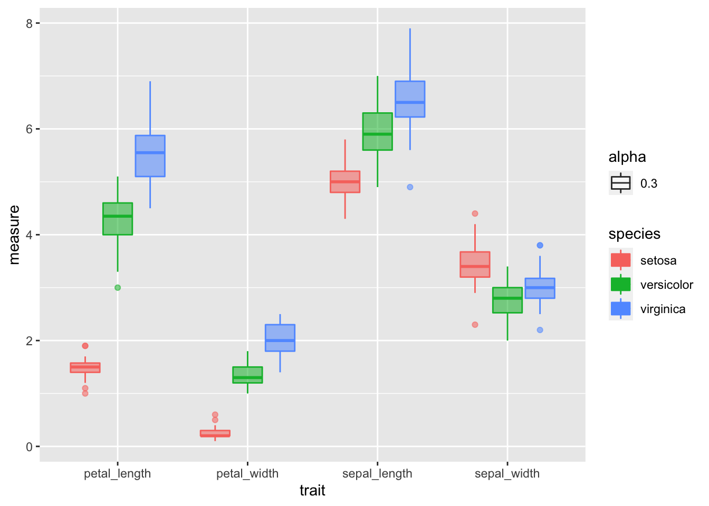
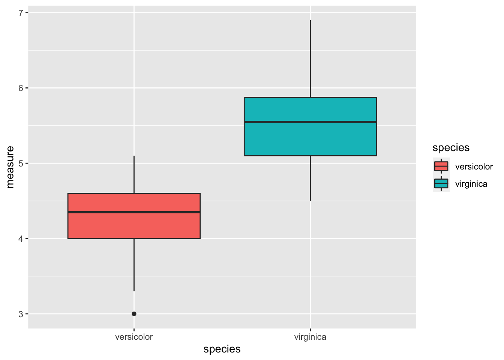
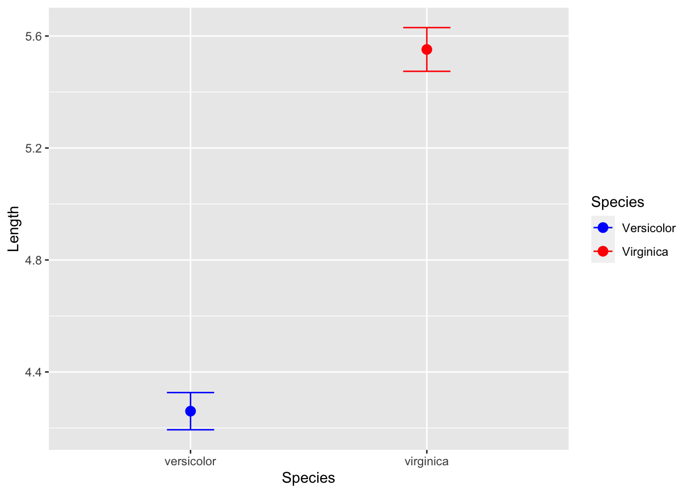

##Load libraries We will read in the main files and load the libraries as we have worked with so far.
# One new package for summary stats
#install.packages("broom")
# install.packages("GGally")
# install.packages("car")
# install.packages("gvlma")
# load the libraries each time you restart R
library(tidyverse)
library(lubridate)
library(scales)
library(skimr)
library(janitor)
library(patchwork)
# library(reshape2)
library(broom)
library(GGally)
library(corrplot)
library(car)# read in the file
iris.df <- read_csv("data/iris.csv") %>%
clean_names() %>%
remove_empty(c("rows", "cols")) ##
## ── Column specification ────────────────────────────────────────────────────────
## cols(
## Sepal.Length = col_double(),
## Sepal.Width = col_double(),
## Petal.Length = col_double(),
## Petal.Width = col_double(),
## Species = col_character()
## )glimpse(iris.df)## Rows: 150
## Columns: 5
## $ sepal_length <dbl> 5.1, NA, 4.7, 4.6, 5.0, 5.4, 4.6, 5.0, 4.4, 4.9, 5.4, 4.8…
## $ sepal_width <dbl> 3.5, 3.0, 3.2, 3.1, 3.6, 3.9, 3.4, 3.4, 2.9, 3.1, 3.7, 3.…
## $ petal_length <dbl> 1.4, 1.4, 1.3, 1.5, 1.4, 1.7, 1.4, 1.5, 1.4, 1.5, 1.5, 1.…
## $ petal_width <dbl> 0.2, 0.2, 0.2, 0.2, 0.2, 0.4, 0.3, 0.2, 0.2, 0.1, 0.2, 0.…
## $ species <chr> "setosa", "setosa", "setosa", "setosa", "setosa", "setosa…###Summary Statistics for the better look ###So this is a lot different than thinking about data from excel
Lets try to do the summary stats on the data now and see how it differs
# the data you want to look at
skim(iris.df)| Name | iris.df |
| Number of rows | 150 |
| Number of columns | 5 |
| _______________________ | |
| Column type frequency: | |
| character | 1 |
| numeric | 4 |
| ________________________ | |
| Group variables | None |
Variable type: character
| skim_variable | n_missing | complete_rate | min | max | empty | n_unique | whitespace |
|---|---|---|---|---|---|---|---|
| species | 0 | 1 | 6 | 10 | 0 | 3 | 0 |
Variable type: numeric
| skim_variable | n_missing | complete_rate | mean | sd | p0 | p25 | p50 | p75 | p100 | hist |
|---|---|---|---|---|---|---|---|---|---|---|
| sepal_length | 1 | 0.99 | 5.85 | 0.83 | 4.3 | 5.1 | 5.80 | 6.4 | 7.9 | ▆▇▇▅▂ |
| sepal_width | 0 | 1.00 | 3.06 | 0.44 | 2.0 | 2.8 | 3.00 | 3.3 | 4.4 | ▁▆▇▂▁ |
| petal_length | 0 | 1.00 | 3.76 | 1.77 | 1.0 | 1.6 | 4.35 | 5.1 | 6.9 | ▇▁▆▇▂ |
| petal_width | 0 | 1.00 | 1.20 | 0.76 | 0.1 | 0.3 | 1.30 | 1.8 | 2.5 | ▇▁▇▅▃ |
iris.df %>% group_by(species) %>% skim_to_wide()## Warning: 'skim_to_wide' is deprecated.
## Use 'skim()' instead.
## See help("Deprecated")| Name | .data |
| Number of rows | 150 |
| Number of columns | 5 |
| _______________________ | |
| Column type frequency: | |
| numeric | 4 |
| ________________________ | |
| Group variables | species |
Variable type: numeric
| skim_variable | species | n_missing | complete_rate | mean | sd | p0 | p25 | p50 | p75 | p100 | hist |
|---|---|---|---|---|---|---|---|---|---|---|---|
| sepal_length | setosa | 1 | 0.98 | 5.01 | 0.36 | 4.3 | 4.80 | 5.00 | 5.20 | 5.8 | ▃▃▇▅▁ |
| sepal_length | versicolor | 0 | 1.00 | 5.94 | 0.52 | 4.9 | 5.60 | 5.90 | 6.30 | 7.0 | ▂▇▆▃▃ |
| sepal_length | virginica | 0 | 1.00 | 6.59 | 0.64 | 4.9 | 6.23 | 6.50 | 6.90 | 7.9 | ▁▃▇▃▂ |
| sepal_width | setosa | 0 | 1.00 | 3.43 | 0.38 | 2.3 | 3.20 | 3.40 | 3.68 | 4.4 | ▁▃▇▅▂ |
| sepal_width | versicolor | 0 | 1.00 | 2.77 | 0.31 | 2.0 | 2.52 | 2.80 | 3.00 | 3.4 | ▁▅▆▇▂ |
| sepal_width | virginica | 0 | 1.00 | 2.97 | 0.32 | 2.2 | 2.80 | 3.00 | 3.18 | 3.8 | ▂▆▇▅▁ |
| petal_length | setosa | 0 | 1.00 | 1.46 | 0.17 | 1.0 | 1.40 | 1.50 | 1.58 | 1.9 | ▁▃▇▃▁ |
| petal_length | versicolor | 0 | 1.00 | 4.26 | 0.47 | 3.0 | 4.00 | 4.35 | 4.60 | 5.1 | ▂▂▇▇▆ |
| petal_length | virginica | 0 | 1.00 | 5.55 | 0.55 | 4.5 | 5.10 | 5.55 | 5.88 | 6.9 | ▃▇▇▃▂ |
| petal_width | setosa | 0 | 1.00 | 0.25 | 0.11 | 0.1 | 0.20 | 0.20 | 0.30 | 0.6 | ▇▂▂▁▁ |
| petal_width | versicolor | 0 | 1.00 | 1.33 | 0.20 | 1.0 | 1.20 | 1.30 | 1.50 | 1.8 | ▅▇▃▆▁ |
| petal_width | virginica | 0 | 1.00 | 2.03 | 0.27 | 1.4 | 1.80 | 2.00 | 2.30 | 2.5 | ▂▇▆▅▇ |
# this will add an index to the dataframe so you know what individual is which
iris_long.df <- iris.df %>%
mutate(individual = row_number()) %>%
gather(trait, measure, -species, - individual)
head(iris_long.df)## # A tibble: 6 x 4
## species individual trait measure
## <chr> <int> <chr> <dbl>
## 1 setosa 1 sepal_length 5.1
## 2 setosa 2 sepal_length NA
## 3 setosa 3 sepal_length 4.7
## 4 setosa 4 sepal_length 4.6
## 5 setosa 5 sepal_length 5
## 6 setosa 6 sepal_length 5.4# Box Plots of data
iris_long.df %>% group_by(species, trait) %>%
ggplot( aes(x = trait, y = measure, color = species, fill=species))+
geom_boxplot(aes(alpha=0.3)) ## Warning: Removed 1 rows containing non-finite values (stat_boxplot).
These look good for the most part with only one or two significant. Your choice to transform or not.
##Factors
Make sure the categorical variable is a factor
Rearrange the order of groups so that control group is first, followed by treatment groups.
you can do this by:
# Make Factors from the different levels long way
# iris_long.df$species <- as.factor(iris_long.df$species)
# iris_long.df$trait <- as.factor(iris_long.df$trait)
# Make Factors dplyr
iris_long.df <- iris_long.df %>%
mutate(
sex = factor(species,
labels = c("setosa", "versicolor", "virginica")),
trait = factor(trait,
labels = c("sepal_length", "sepal_width", "petal_length", "petal_width"))
)So I think this is premature but some people like to test the normality of the data but really you should be assessing the normality of the residuals. But here it goes…
# turn off scientific notaton
options(scipen = 999)
# to turn back on
#options(scipen = 0)
# Test for normality of each group and store in shapirowilktests
# This uses the broom package to get clean output of the test
iris_long.df %>% group_by(species, trait) %>% do(tidy(shapiro.test(.$measure)))## # A tibble: 12 x 5
## # Groups: species, trait [12]
## species trait statistic p.value method
## <chr> <fct> <dbl> <dbl> <chr>
## 1 setosa sepal_length 0.955 0.0548 Shapiro-Wilk normality test
## 2 setosa sepal_width 0.800 0.000000866 Shapiro-Wilk normality test
## 3 setosa petal_length 0.977 0.456 Shapiro-Wilk normality test
## 4 setosa petal_width 0.972 0.272 Shapiro-Wilk normality test
## 5 versicolor sepal_length 0.966 0.158 Shapiro-Wilk normality test
## 6 versicolor sepal_width 0.948 0.0273 Shapiro-Wilk normality test
## 7 versicolor petal_length 0.978 0.465 Shapiro-Wilk normality test
## 8 versicolor petal_width 0.974 0.338 Shapiro-Wilk normality test
## 9 virginica sepal_length 0.962 0.110 Shapiro-Wilk normality test
## 10 virginica sepal_width 0.960 0.0870 Shapiro-Wilk normality test
## 11 virginica petal_length 0.971 0.258 Shapiro-Wilk normality test
## 12 virginica petal_width 0.967 0.181 Shapiro-Wilk normality test#You can do this on all variables faster with if there was only one grouping
# tapply(iris_long.df$measure, iris_long.df$species, shapiro.test)##Test for homogenetiy of variances
Best to use the Levenes test compared to the Bartlet test
uses the car package
http://www.cookbook-r.com/Statistical_analysis/Homogeneity_of_variance/
Note however that this is doing the homogeneity test on all traits and not each one which is what you really should do and is not often done. Need to check on this though.
#Test for homogeneity of variances by groups
leveneTest(sepal_length ~ species, data=iris.df)## Warning in leveneTest.default(y = y, group = group, ...): group coerced to
## factor.## Levene's Test for Homogeneity of Variance (center = median)
## Df F value Pr(>F)
## group 2 6.0386 0.003022 **
## 146
## ---
## Signif. codes: 0 '***' 0.001 '**' 0.01 '*' 0.05 '.' 0.1 ' ' 1#Compared to the Bartlet test
bartlett.test(sepal_length ~ species, data=iris.df)##
## Bartlett test of homogeneity of variances
##
## data: sepal_length by species
## Bartlett's K-squared = 15.308, df = 2, p-value = 0.0004742Create a subset dataframe
sepal_length.df <- iris_long.df %>%
filter(trait =="sepal_length") %>%
filter(species != "setosa")If p-value >= 0.05, use var.equal=TRUE below
t.test(measure ~ species, data=sepal_length.df,
var.equal=TRUE,
conf.level=0.95)##
## Two Sample t-test
##
## data: measure by species
## t = -12.604, df = 98, p-value < 0.00000000000000022
## alternative hypothesis: true difference in means between group versicolor and group virginica is not equal to 0
## 95 percent confidence interval:
## -1.495426 -1.088574
## sample estimates:
## mean in group versicolor mean in group virginica
## 4.260 5.552t.test(measure ~ species, data=sepal_length.df,
var.equal=FALSE,
conf.level=0.95)##
## Welch Two Sample t-test
##
## data: measure by species
## t = -12.604, df = 95.57, p-value < 0.00000000000000022
## alternative hypothesis: true difference in means between group versicolor and group virginica is not equal to 0
## 95 percent confidence interval:
## -1.49549 -1.08851
## sample estimates:
## mean in group versicolor mean in group virginica
## 4.260 5.552Boxplot of data
sepal_length.df %>%
ggplot(aes(species, measure, fill = species)) +
geom_boxplot()
Mean and standard error plot
sepal_length.df %>%
ggplot(aes(species, color=species)) +
stat_summary(aes(y = measure),
fun.y = mean, na.rm = TRUE,
geom = "point",
size = 3) +
stat_summary(aes(y = measure),
fun.data = mean_se, na.rm = TRUE,
geom = "errorbar",
width = 0.2) +
labs(x = "Species", y = "Length") +
scale_color_manual(name = "Species",
values = c("blue", "red"),
labels = c("Versicolor", "Virginica"))## Warning: `fun.y` is deprecated. Use `fun` instead.